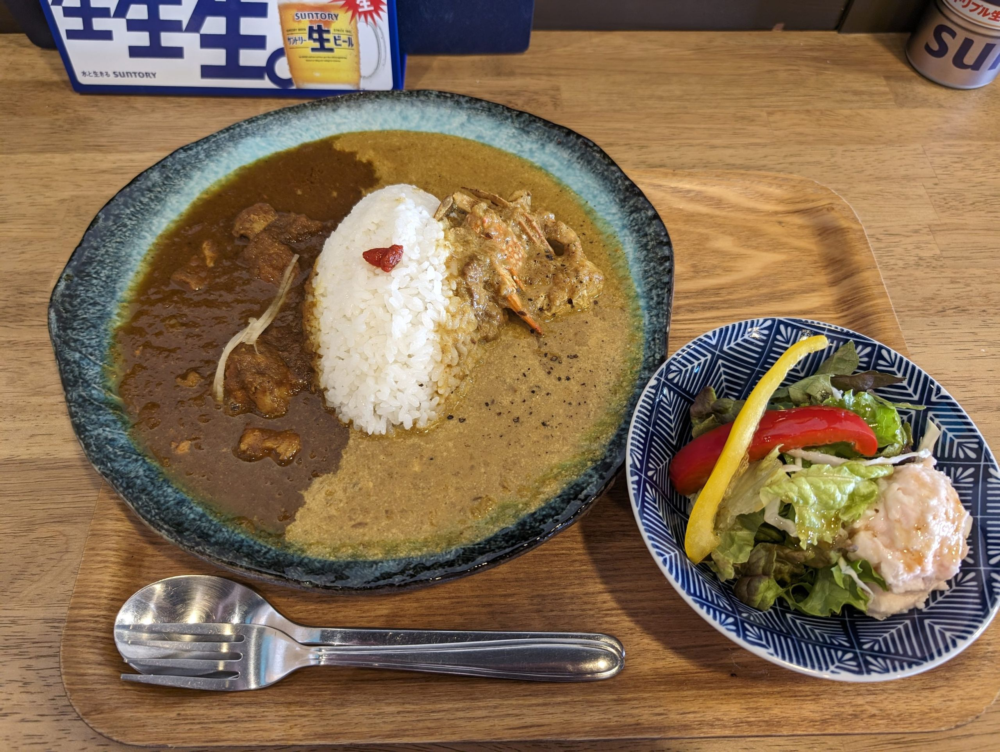

📷
彦根ダイニングジャンゴ（彦根）― ライスボウル優勝メンバーが手がける、彦根の一店
「ライスボウル優勝メンバーが手がける一店。
彦根で食べるなら、仲間にここを教えたい。」
彦根で食べるなら、仲間にここを教えたい。」
― FOOTBALL CONNECTION 編集部コメント
FOOTBALL CONNECTION MEMBER
料理長の浅尾氏は立命館大学PANTHERSの元主将。ライスボウル2008年優勝のアメフト最高峰を経験した気髪が、彦根の料理にもなぎ込む。
🍽️ このお店について
滋賀県彦根市立花町に構える彦根ダイニングジャンゴ。
ランチタイムは地元のビジネスマンや観光客で賑わい、
ディナーは落ち着いた空間で食事や飲み会を楽しめる。
アメフト最高峰の舞台・ライスボウルを制した浅尾料理長が、
フィールドと同じ情熱を料理に注いでいる。
ライスボウル優勝・元主将が腕を振るう店
アメフト最高峰の大会で優勝を経験した浅尾料理長が腕を振るう、本物のこだわりがある一店。
「全力でやりきる」という姿勢は料理にも表れている。
アメフト仲間との話題が自然と弾む空間。
ランチもディナーも充実
11:00〜15:00のランチ、18:00〜22:00のディナーと、
一日を通して使いやすい営業体制。
彦根城観光や試合の前後に立ち寄りやすいロケーションも魅力。
🏈 アメフト関係者への一言
ライスボウル優勝という最高の実績を持つ浅尾料理長がいる店に、 アメフト関係者が行かない理由はない。 「あのジャンゴの料理長ってライスボウル優勝した元主将なんだよ」―― そんな自慢話ができる仲間の店がここにある。
関西・東海エリアの試合遠征で彦根を訪れた際は、 ぜひ立ち寄ってほしい。料理長とアメフト談義に花を咲かせながら食事を楽しむ、 そんな特別な時間が待っている。
📅 おすすめ利用シーン
懇親会・
表彰式
表彰式
試合後の
打ち上げ
打ち上げ
遠征時の
ランチ
ランチ
チーム
飲み会
飲み会
初対面
交流
交流
彦根観光
と合わせて
と合わせて
🎫 FOOTBALL CONNECTION 来店特典
来店時にスタッフへ合言葉をお伝えください
「タッチダウン！」
合言葉で来店特典あり（詳細は店舗へご確認ください）
📋 基本情報
| 🏪 店名 | 彦根ダイニングジャンゴ |
| 📍 エリア | 滋賀県彦根市 |
| 🏠 住所 | 滋賀県彦根市立花町3-3 |
| 🕐 営業 | 11:00〜15:00 / 18:00〜22:00 |
| 🗓️ 定休日 | 木曜 |
| 🍽️ ジャンル | ダイニングレストラン |
| 📞 電話 | 0749-49-3557 |
| @sun_burger_and_jango | |
| 👤 料理長 | 浅尾氏（立命館大学PANTHERS元主将・2008年ライスボウル優勝） |
📝 店舗オーナーの方へ
情報の修正・追加・画像掲載をご希望の方はこちらのフォームよりご連絡ください。